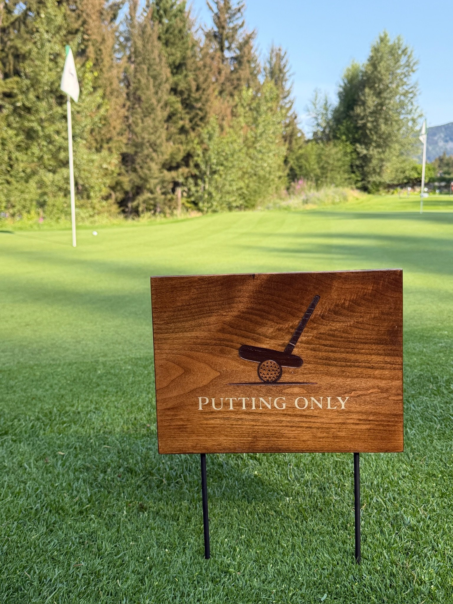

Recent work
From the studio.
Recent commissions and studio projects.

Course signage
Starter station and yardage markers. Fairmont Chateau Whistler Golf Club.

Hole-in-one plaque
Burl wood with black epoxy resin. Engraved hole topography.

Practice area signage
Engraved putter graphic on walnut. Steel stake mounting.

Tee markers
Hexagonal walnut markers with silver inlay and engraved club crest.

Wayfinding signage
Restroom directional sign. Walnut with engraved pictograms.

Range ball baskets
Timber and metal construction. Designed for daily use on the range.
Collections
See what we make
Tee markers, signage, plaques, and course accessories.